The choices around the ranker (which retrievers build the candidate list, how the ranker's training lists and statistics are built) decided final quality far more than the ranker model. Fixing them improved held-out Test nDCG@10 by 61%.
How to read this poster · two dimensions
Planned question ↓ · what we found →
Shortcut 1 forced training lists
Shortcut 2 ranker learns the retriever
Shortcut 3 statistics age
Shortcut 4 recommends what you own
RQ1 Retriever design
·
Two retrievers share 12/200; mixing +22% Test
·
Recency anchors on your own history
RQ2 K and search
Explains the K curve: collapse was a training artefact
·
·
·
RQ3 Ranker choice
Natural lists +24%; DIN then beats MLP
Retrain on the lists it will rank
Same frozen model +21% Test
Ranker cannot add what retrieval missed
Output Trade-offs and misses
·
·
·
Who it works for: repeat buyers, known stores
Rows are the questions we set out to answer (critique slides): panels 1–5. Columns are the mechanisms we found while answering them: the shortcut cards and panel 6.
1Task · pipeline · design
A two-stage recommender, studied one stage at a time
Output: Recall@K, nDCG@10 and latency trade-offs; retrieval misses vs ranking misses (panel 5).
Protocol: time split (train to Aug 2021, Validation to Jul 2022, then Test); 3 seeds; paired user bootstrap; every choice made on Validation; Test opened once with predictions written first.
2RQ1 · Experiment A · retriever design
The trained two-tower beats every baseline, and mixing it with a recency retriever beats both
At a fixed candidate count, does our two-tower retriever beat popularity, BPR-MF, ItemKNN and SASRec on Recall@K?
Retriever, no ranker
Val Recall@200
Val nDCG@10
Popularity
0.027
0.0017
ItemKNN
0.008
0.0006
BPR-MF
0.027
0.0017
SASRec
0.040
0.0031
Two-tower (text)
0.069
0.0057
Recency (no training: your recent purchases, by text)
0.055
0.0063
Mixed: recency + two-tower, alternating
0.080
0.0074
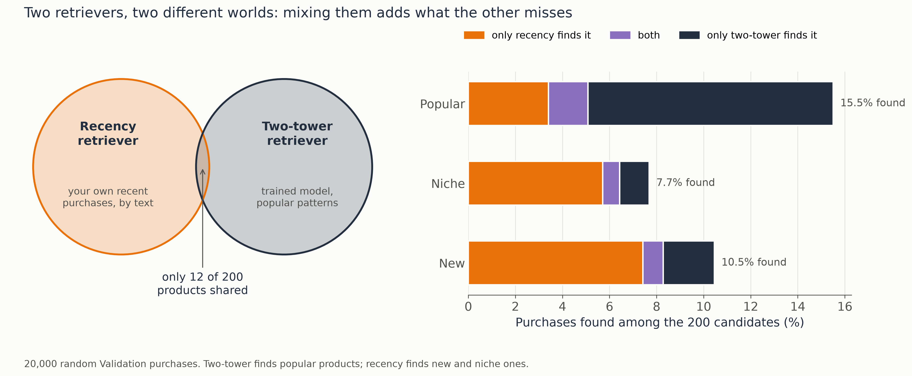
The two find different products: two-tower finds popular ones, recency finds new and niche ones. Only the text-based models find new products at all. With a ranker on top, mixing gives +35% Val, +22% Test.
Baselines: same training period (RQ1 table). Recency and mixed rows: Brandon's pools (P1, P3; alternating order), Validation.
3RQ2 · Experiment A · candidate count and search
Recall keeps rising with K, but final quality peaks at K≈100–200
With retriever and ranker fixed, how do K and Flat / HNSW / IVF search affect Recall@K, nDCG@10 and latency?
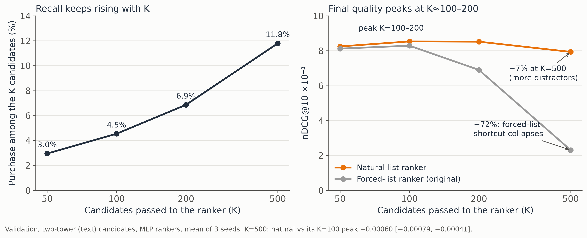
Beyond K=200 the extra candidates are mostly distractors: recall nearly doubles to K=500, but the natural-list ranker loses 7%. The forced-list ranker collapses (Shortcut 1).
Index (K=200)
Keeps of exact top 200
Purchases found
nDCG@10 ×10⁻³
Median latency
Flat (exact)
100%
5.67%
7.37
3.4 ms
HNSW
99.4%
5.67%
7.37
1.5 ms
IVF
94.6%
5.47%
6.75
0.9 ms
Why IVF is worse: IVF splits the catalogue into 1,024 clusters and searches only the 32 nearest. Products in other clusters are never looked at, so 5% of the exact top 200 disappear, and some of them are the purchase (5.67% → 5.47% found). HNSW walks a neighbour graph instead and keeps 99.4%, so it is free speed. A lost purchase can't be recovered by the ranker, which is why a 3.5% loss in found purchases costs 8% of nDCG. (1,000-query sample.)
4RQ3 · Experiment B · ranker choice
DIN beats the MLP, but what the ranker is fed matters more than its architecture or loss
On identical lists, how do popularity order, retrieval order, an MLP and DIN compare?
Test nDCG@10 ×10⁻³
Recency lists
Two-tower lists
Mixed lists
Popularity order
1.51
–
–
Retrieval-score order
6.04
–
–
MLP
6.53
5.19
7.31
DIN
–
6.37
8.27
Learned rankers beat simple orderings: MLP 6.53 vs retrieval order 6.04 vs popularity 1.51 on the same lists.
DIN vs MLP on identical mixed lists: +13% on Test [+0.0008, +0.0011], winning on popular, niche and new products; +23% on two-tower lists.
Changing the ranker's loss (BCE → pairwise) moved Test nDCG@10 by at most 0.0005.
Changing what it is fed moved it far more: natural lists +24%, retraining on mixed lists +35%, statistics of the right age +21% (Shortcuts 1–3 below).
SWhat we found while answering the RQs · four shortcuts
The ranker learns whatever its inputs make easy
Shortcut 1 · explains RQ2's K curve, RQ3
Forcing missed purchases into training lists taught "the lowest score is the answer"
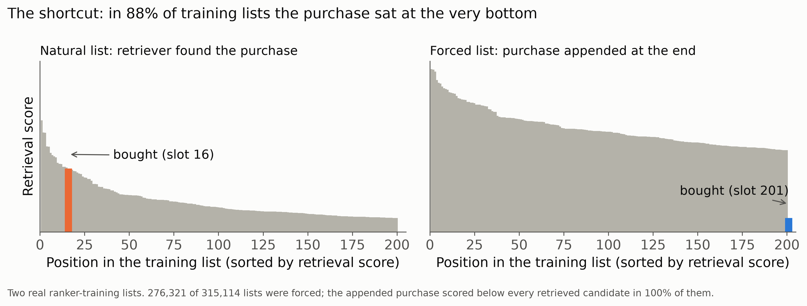
In 88% of training lists the purchase was appended below every real candidate.
Natural-list training: +24% at K=200, and no collapse at K=500 (−72% before).
Two earlier project conclusions ("more candidates hurt", "MLP beats DIN") were artefacts of this.
Shortcut 2 · RQ1, RQ3
The ranker learns the habits of the retriever that feeds it
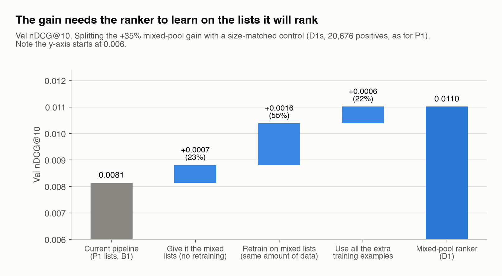
Of the +35% mixed-list gain, only 23% comes from the better candidates alone; 55% needs the ranker retrained on the mixed lists.
Shortcut 3 · RQ3
"No reviews yet = likely purchase" only works with statistics as old as in training
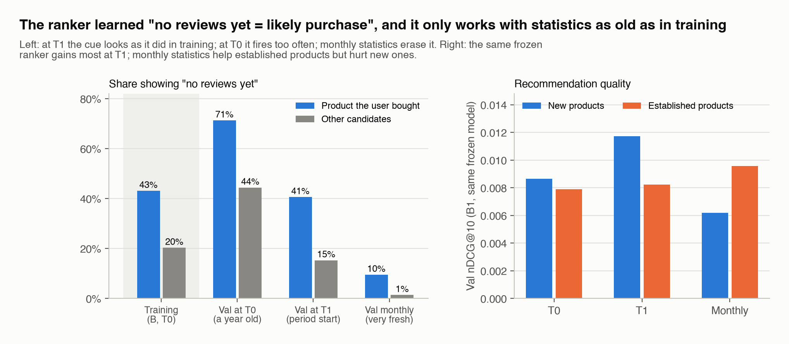
In training, 43% of purchases had no reviews vs 20% of other candidates. Statistics recomputed at the period start: +21% on Test, same frozen model. Consistent monthly statistics then make "bought together" inputs useful.
Shortcut 4 · RQ1, RQ3, Output → panel 6
The system recommends more of what you already own
Both retrievers build the query from your own history. Gains concentrate on repeat accessorising from stores you know; upgrades, platform switches and new stores stay unsolved.
Same-store purchases: 6.6% → 14.7% in the top 10; the other 91%: no gain.
Upgrades: 37% of candidates are for the old phone, 3% for the new one.
The ranker shifts slots toward the right phone (26% → 33%) but cannot add what retrieval missed.
5Output · evaluation
Most failures happen before ranking; the fixed system is 59–61% better for 14–28 ms more per user
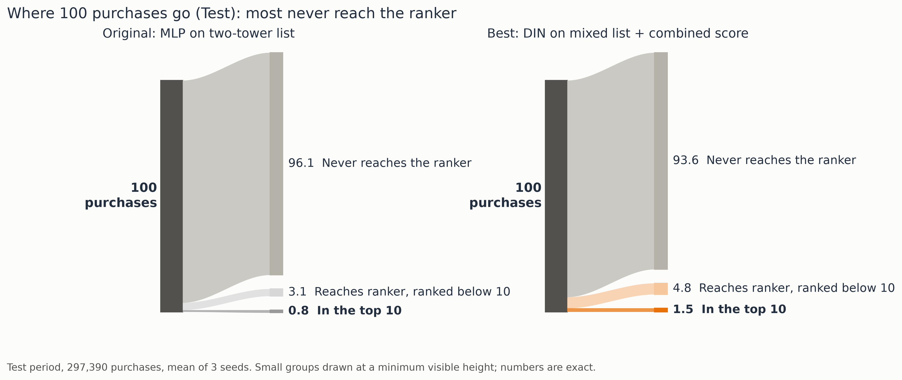
Retrieval misses vs ranking misses on Test.
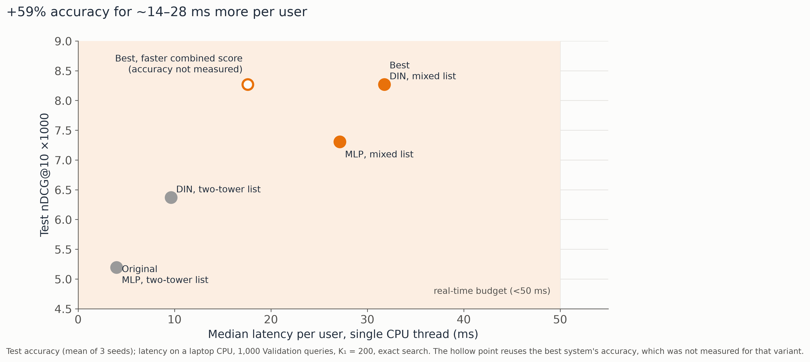
Accuracy vs latency (laptop CPU, one thread, K=200). Hollow point: faster combined score, accuracy not yet measured.
Best combined system (mixed lists + consistently timed monthly statistics + "bought together" inputs): Test nDCG@10 0.0064 → 0.0104 (+61%); 8 of 9 pre-registered predictions held.
DIN on mixed lists vs the original MLP: 0.0052 → 0.0083 (+59%); new products ×5.8; 4 of 5 predictions held fully.
6Meso and micro · who it works for (Shortcut 4 in detail)
Two real buyers: where our setup helps, and where it still fails
Helps: a repeat buyer, same store, same phone family
Owned beforeUAG rugged case · iPhone 13
→
Bought next · Apr 2022UAG rugged case · iPhone 13 Pro
What each system did
Original (MLP, two-tower)not in its 200
Best (DIN, mixed list)#1
The recency retriever matches the same store and phone family; DIN puts it first. Same-store purchases: 6.6% → 14.7% in the top 10.
Fails: an upgrader, iPhone 6s Plus → iPhone XS Max
Owned before
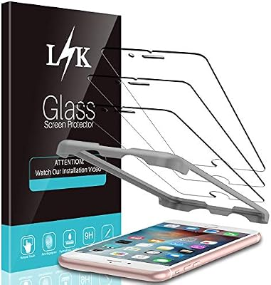
Case + screen protector · iPhone 6s Plus
→
10 closest candidates
all 10 are for the old iPhone 6s Plus
Bought · Mar 2022Leather case · iPhone XS Max · never reached the ranker
The history pulls every candidate toward the phone being replaced. Across 2,000 upgrades: 37% of candidates old phone, 3% new.
Two real Validation purchases, with their Amazon product photos; the bold lines give the group statistics they illustrate.
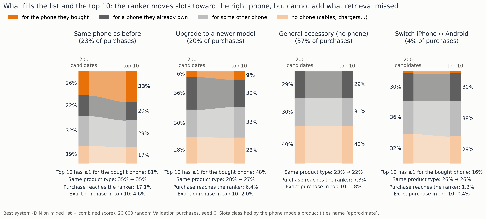
Right phone, wrong product: for same-phone buyers 81% of top 10s hold something for their phone, but only 4.6% hold the exact purchase. The ranker shifts slots toward the right phone but cannot add what retrieval missed.
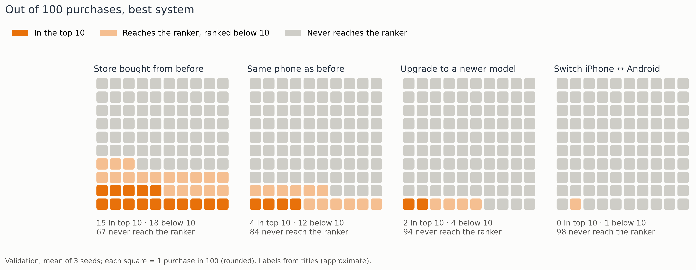
Store loyalty carries the gain: 15 in 100 same-store purchases reach the top 10; platform switchers 0.
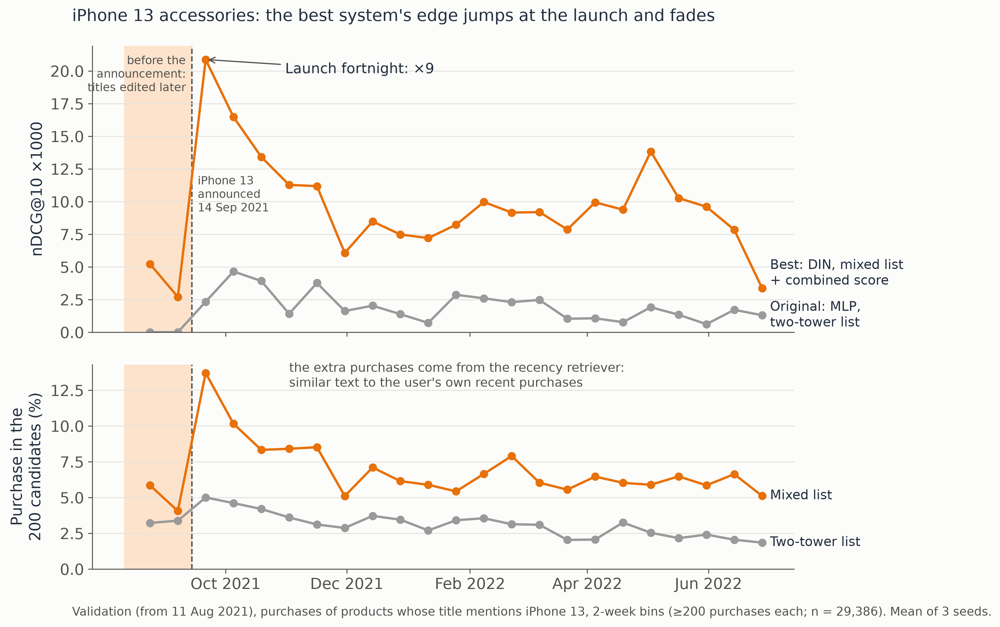
Launch wave: iPhone 13 launch fortnight ×9, fading to about ×4 by December. Same for Pixel 6, iPhone SE 2022, MagSafe; Apple Watch bands are the exception.
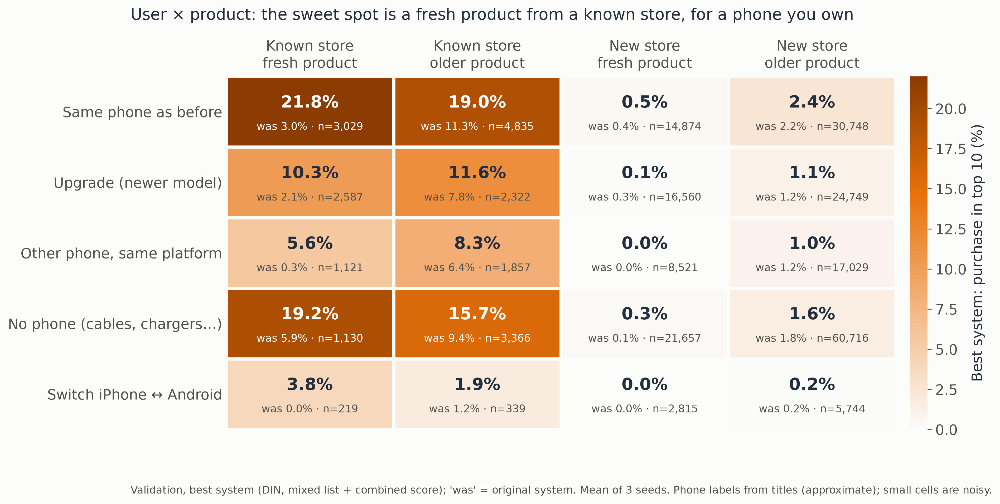
Sweet spot: fresh product, known store, phone you own → 21.8% in the top 10 (was 3.0%).
Takeaways
RQ1: the trained two-tower beats every baseline; two retrievers that see different products beat any one.
RQ2: recall rises with K but quality peaks at K≈100–200; HNSW is free speed, IVF drops purchases the ranker can't recover.
RQ3: DIN beats the MLP, yet natural training lists, retraining on the right lists and statistics of the right age matter more.
Output: most misses are retrieval misses; the system serves buyers accessorising a phone they own.
Every shortcut is one lesson: the ranker learns whatever its inputs make easy.
Limitations
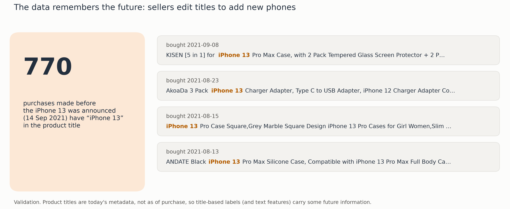
Product titles are today's metadata: sellers add new phones later. Phone labels (and text features) carry some future information.
Validation unless marked Test. Phone and platform labels from titles are approximate. Latency measured on a laptop CPU, single thread.